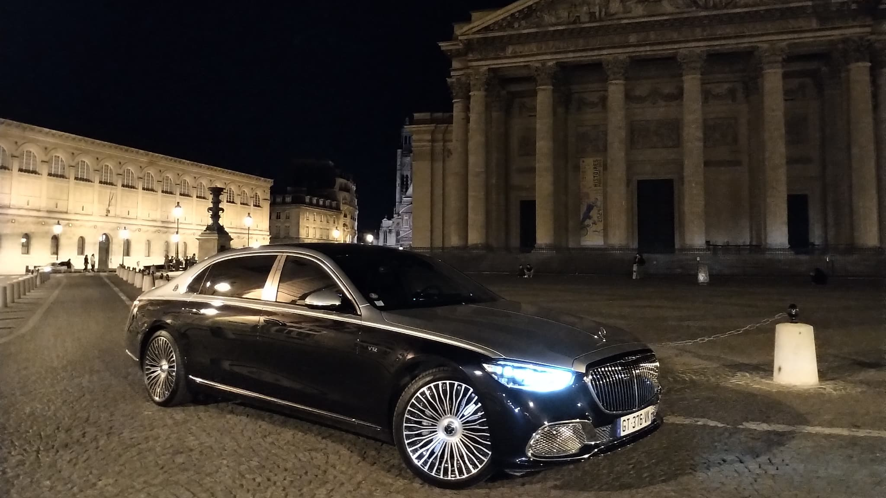

MERCEDES
Prix: 50000€
UNE SNEAKER EN CUIR MATELASSÉE AU LOOK CASUAL.
Mercedes-Benz incarne l'excellence et le luxe dans l'industrie automobile, avec une réputation bien établie pour ses véhicules haut de gamme.
La marque se distingue par son savoir-faire artisanal, son design élégant et ses performances de pointe.
Les véhicules Mercedes-Benz allient sophistication, confort et innovation technologique pour offrir une expérience de conduite exceptionnelle.
Sous le capot, Mercedes-Benz propose une gamme de motorisations puissantes et efficientes, allant des moteurs essence et diesel aux versions hybrides et électriques, offrant des performances remarquables tout en restant respectueuses de l'environnement.
La marque est également connue pour sa transmission sophistiquée et ses systèmes de conduite semi-autonome, assurant une conduite fluide et sécurisée.
À l'intérieur, les véhicules Mercedes-Benz offrent un intérieur luxueux, avec des matériaux haut de gamme, des finitions impeccables et des technologies de pointe.
. Les systèmes d'infodivertissement MBUX, les sièges ergonomiques et les fonctionnalités avancées d'assistance à la conduite font partie des caractéristiques qui distinguent les véhicules Mercedes-Benz et offrent un confort et une commodité inégalés à leurs occupants..